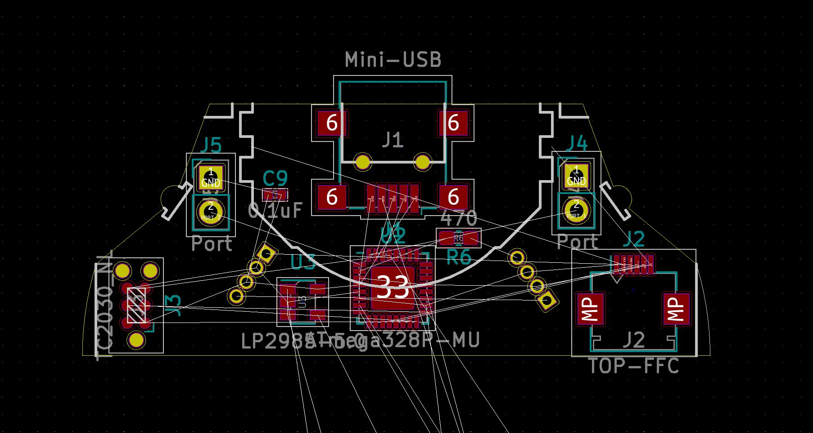

SAN: PCB Design
Table of Contents
1 Objectives
- Find dimensions of PCBs that can then be used with KiCad.
- Check the schematic designed with KiCad.
- Create a manufacturing ready board layout.
- Optimize price and manufacturing time.
2 3D mockup
Via the top left menu, layers can be turned off to reveal the inside of the sphere. Only certain large components are part of the mockup. The 3D mockup has been created with the Iris plugin from the Rhino 3D model file mockup.3dm.
- The diameter of the sphere is 50 mm.
- Only larger components have been included.
- There are two PCBs in order to get the LEDs in the correct positions.
- The right angle SMD LEDs shine light sidewards. They are mounted at an offset from the shell in order to diffuse light.
- The top USB connector is abused for interfacing with an FTDI. This is to easily be able to update the firmware.
3 Schematic

This is a snapshot of the schematic. The most recent version of the schematic can be found in the KiCad project node in the SAN repo on GitHub.
4 Board layout

nothing to see here
5 Seeed Studio
As assembly house Seeed Studio has been chosen. Capabilities of the Seeed Fusion One-Stop PCB Assembly Service:
- Fusion overview (Passive Components as small as 01005(0402) package)
- Seeed Studio Fusion PCB Assembly (with section about PCB assembly capabilities)
- Fusion PCB Specification (incl. Gerber requirements and tolerances)
- Fusion PCBA Specification
- Component layout considerations – PCB DFM Part 4
- Fusion Technical FAQ? (with panelization rules and more)
5.1 OPL
Seeed keeps components in stock for quick production time. These are listed in the Open Part Library. Notes:
- The OPL is split into two libraries: Selected can be the Seeed OPL or the Shenzhen OPL, which is based on a partnership with the HuaQiang Group.
- For the Seeed OPL there is a corresponding KiCad library available.
- For the project, only components from the OPL will be used. (Let’s hope components in the Seeed OPL are in stock.)
5.2 OPL BOM
Incomplete BOM based on the OPL:
| QTY | Libary | MPN | Description | Manufacturer |
|---|---|---|---|---|
| 4 | Seeed | WS2812B | NeoPixel SMD | Worldsemi |
| 2 | Shenzhen | FH34SRJ-8S-0.5SH(50) | 8 pin FFC connector SMD | HRS |
| 2 | Shenzhen | FH12-6S-0.5SH(55) | 6 pin FFC connector SMD | HRS |
| 1 | Seeed | ATMEGA328P-MU | MCU, 32-VFQFN exposed pad | Atmel |
| 1 | Shenzhen | LP2985AIM5-5.0/NOPB | 5V regulator, SOT23-5 | TI |
| 1 | Shenzhen | LP2985A-33DBVR | 3.3V regulator, SOT23-5 | TI |
| 4 | Shenzhen | 0533980271 | 2 pin PicoBlade connector | Molex |
Only one of the FFC connectors is needed, of course. If the accelerometer circuit fits on the top board, then only six pins are needed.
5.3 Inside
The author of this document visited Seeed Studio in Shenzhen as part of Mitch Altman’s 2017 Hacker Trip to China.

6 NeoPixel LEDs
The LEDs have been changed to point upwards instead of sidewards. The workaround is to design the 3D printed shell so that light is deflected sidewards, possibly with the help of a reflective patch.
Concerning connecting the LEDs, see the Adafruit NeoPixel LED Überguide. It mentions:
“When using a DC power supply, or an especially large battery, we recommend adding a large capacitor (1000 µF, 6.3V or higher) across the + and terminals.”
With the board here, this may not be necessary. After all, the NeoPixels are powered by regulated 5V. (to keep brightness constant)
- “With through-hole NeoPixels (5mm or 8mm), add a 0.1 µF capacitor between the + and pins of EACH PIXEL. Individual pixels may misbehave without this “decoupling cap.”
- “Adding a ~470 ohm resistor between your microcontroller's data pin and the data input on the NeoPixels can help prevent spikes on the data line that can damage your first pixel.”
There is also a datasheet.
7 Accelerometer
First: The accelerometer circuit can be left away entirely, if that makes things easier. It is an experimental feature, and the system will function without it.
Requirements:
- analog readout (because there are no free timers, and because readout should be as fast as possible)
- one axis (direction doesn’t matter)
- range as close as possible to ±1g, definitely no more than ±3g
No compatible accelerometers are available in the Seeed OPL. Workaround:
- leave the space vacant
- in order to make hand soldering as easy as possible:
- choose the ADXL335, which is larger than the ADXL337
- make the pads large
It may be possible to find someone in Hong Kong or Shenzhen to hand solder these.
8 Pre-production checklist
- Do the FCC connectors match? (mirrored)
- Are the holes big enough for the 5 mm NeoPixel pins?
- Is there protection against reverse polarity?
- Are there unanswered open questions?
- Are there components / connectors colliding mechanically with the sphere or the other board?
- Is there protection against applying charge to the batteries when someone plugs in a powered USB cable into the FTDI port?
- Are the LEDs in the correct position?
- Are the ports in the correct position?
- Is the FTDI interface wired up correctly?
- Is the bootloader burner interface wired up correctly?
- Are all ground zones connected?
- Within Seeed Fusion PCB specification?
- DRC OK?
- What is unconnected in DRC?
9 Open questions
Can the OPL Micro-USB connectors be used?
Available are (search for USB then select Connectors):
- U-F-M5DD-Y-L (Shenzhen)
- U-F-M5DD-Y-L1 (Shenzhen)
- 10118193-0001LF (Seeed)
If the connectors require wave soldering, then possibly having the battery holder pad underneath is problematic, although both connections are to ground.
A non-USB connector is fine too, and it’s less confusing. Requirements for a connector:
- Accesibility from the outside (reprogramming at times happens often)
- Safety: The connector should be robust, which includes a design that makes it hard to short pins.
Should there be 470 Ω resistors between BNC connectors and the 328P pins?
The idea is to protect the 328P when someone accidentally shorts a BNC connector. On the other hand, there are no such resistors in the current hand-soldered version, and things work fine (asides from the NeoPixel LEDs starting to fail more frequently).
Should there be 0.1 µF capacitors in between +5V and GND for each WS2811?
That’s recommended in the Adafruit NeoPixel Überguide.
Add a solder bridge to easily turn off the accelerometer circuit?
Then the circuit can be easily disconnected in case it doesn’t work.
Should the top PCB get more space?
It could be extended downwards at the expense of the bottom PCB.
10 Source of 3D compontents
- BK-912: BK-912.STEP
- APFA3010LSEEZGKQBKC: APFA3010.STEP
- Molex PicoBlade 0533980271: 533980271.stp
- TE AMP Mini CT 292228-2: c-0292228-02-a-3d.stp
- Amphenol 10118193-0001LF: 10118193-0001lfc.stp
- Amphenol SFW8R-2STE1LF: ssfw08r24stlf.stp
- ATMega 328P-AU: 32A.step (Ultra Librarian for Digi-Key)
- BNC connectors: 31-221-RFX.stp
- Hirose FH12-6S-0.5SH(55): FH12-6S-0.5SH.stp